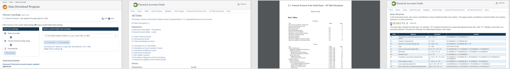
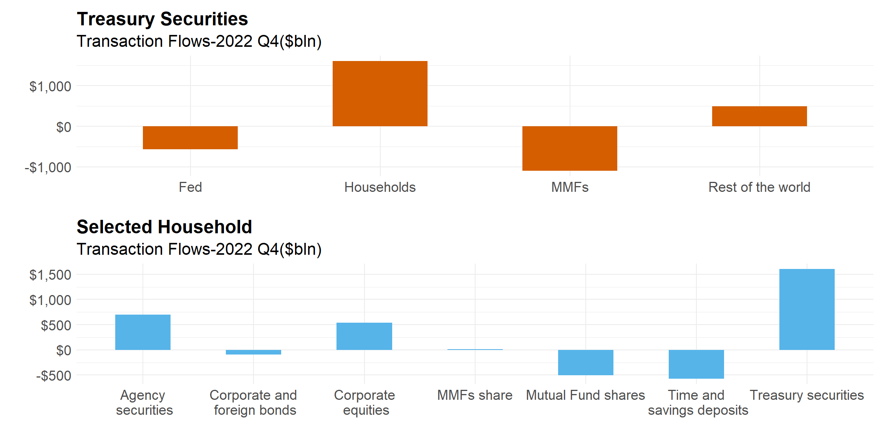

fedz1 PackageAn Easier Access to Financial Accounts of the U.S. (Z.1)
May, 2023
The Financial Accounts of the United States, known as Z1, contains data that track the movement of money among different sectors of the economy such as households and nonprofit organizations, nonfinancial corporate businesses, and nonfinancial noncorporate businesses. It includes data on transactions and levels of financial assets, liabilities and balance sheets.
Data is publicly available, but due to the number of data sets and scattered tables and definitions, it is hard to understand, obtain, and analyze data.
Learn more: tables, definitions, and the meaning of each series
fedz1: dataThe objective of the fedz1 package is to provide easier access to Z1 data. The project is a web scrapping that brings more than twenty thousand datasets into one place.
Learn more: fedz1
fedz1: functionsIn addition to access to all data, users can utilize functions to explore tables, definitions, and the meaning of each series.
# Load fedz1 package
library(fedz1)
get_series(choice="series")
get_series(choice="tables")
search_series("Real estate investment trusts")#all series with the search
search_tables("Nonfinancial Corporate Business")#series associated with a table
meaning_of_prefix("FL")#definition of series
table_descr(c('Net Capital Transfers',"Closed-End Funds"))#the definition of a tableThe household purchase of Treasuries increased significantly during the tightening monetary policy.
